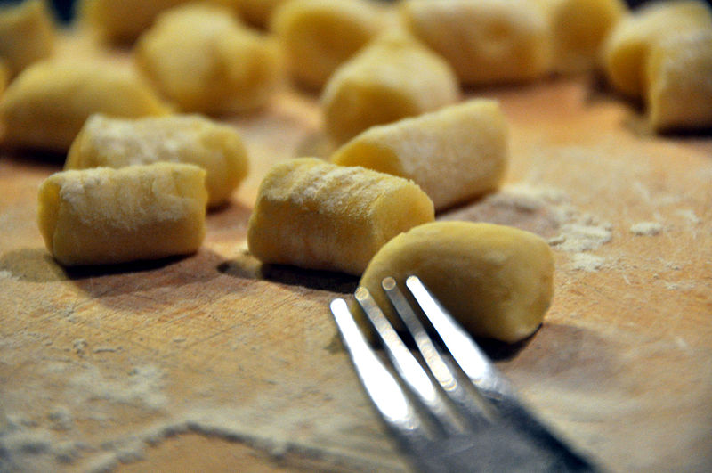

Description
Here is a simple recipe for gnocchi. This is a soft, delicious potato pasta that goes well with a variety of sauces. Enjoy!
Ingredients
- 2 cups instant potatoes
- 2 eggs
- ricotta cheese
- 2.5 - 3 lbs. of flour
- 4 tblsp of butter
- salt
Steps
- Add just enough hot water to potatoes to moisten (about 2 cups).
- Add melted and cooled butter.
- Add 2 whole eggs.
- Add small handful of salt.
- Add 0.75 - 1 cup of ricotta cheese.
- Mix thoroughly by hand.
- Continue to work in additional flour to mixture until proper texture is achieved. (About 2.5 - 3 lbs. of flour.)